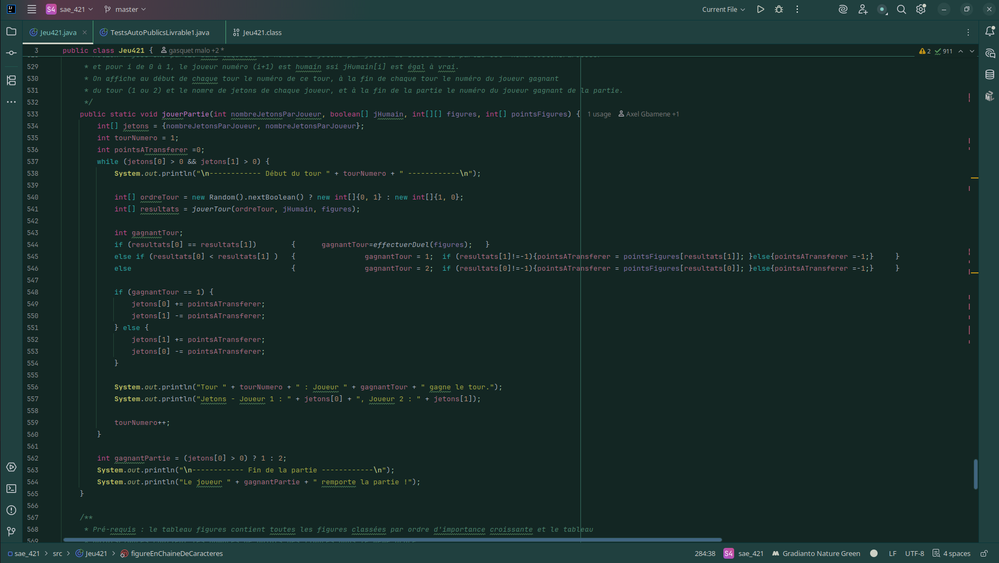
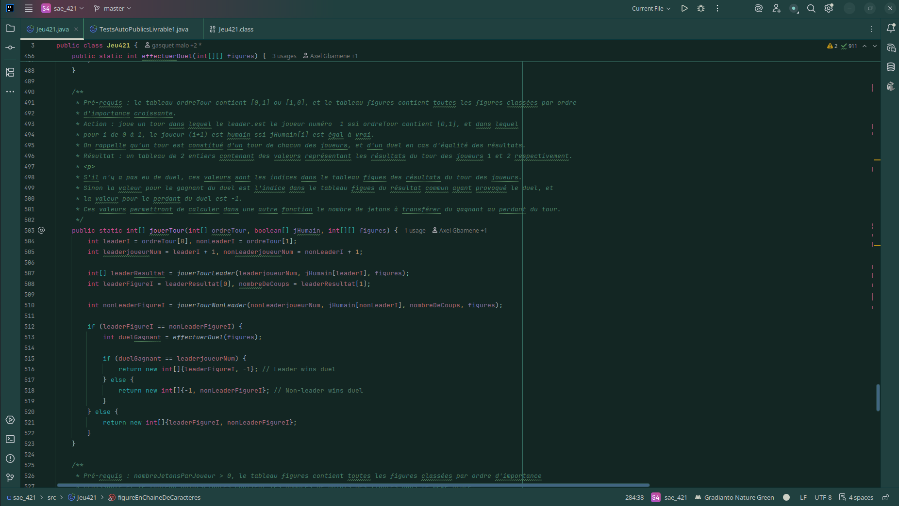
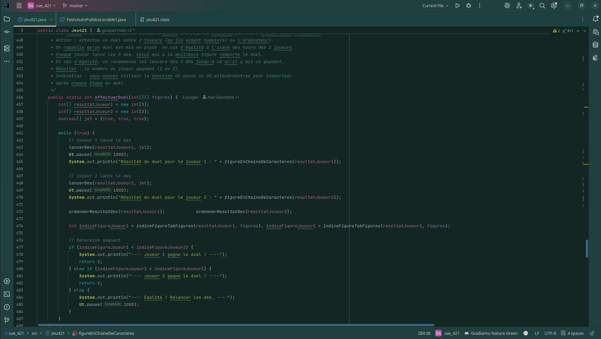

SAE 1.01 – Développement du jeu 421
Projet de première année visant à implémenter un jeu de dés « 421 » en Java en respectant des contraintes précises de fonctionnement et de code.
Contexte du projet
Ce projet a été réalisé dans le cadre de la SAE 1.01 « Implémentation d’une application » en BUT1 Informatique. L’objectif était de développer un jeu de dés « 421 » en Java, sur une durée de plusieurs mois, afin de mettre en pratique les bases de la programmation et de l’algorithmique. Le travail s’est déroulé en groupe de 2 à partir d’un sujet académique détaillé.
Méthodes de travail et résultats obtenus
Pour le développement du jeu 421, les méthodes ainsi que leurs signatures et leurs rôles étaient déjà spécifiés dans le sujet. Il s’agissait donc d’implémenter la logique à l’intérieur de ces méthodes en respectant les explications et les contraintes données.
Nous avons utilisé IntelliJ et GitLab pour développer et versionner le projet, ce qui a facilité le suivi des modifications et les essais de différentes solutions. Des tests déjà écrit par les professeurs ont servit à vérifier le respect des règles et corriger les bugs rencontrés.
Le résultat final est un jeu de 421 fonctionnel, qui respecte les contraintes du sujet et illustre une première approche structurée de la programmation en Java.
Voici quelques exemples des méthodes qu'on a pû implémenter durant ce projet :
  Compétences travaillées
- Mettre en œuvre les bases de la programmation en Java.
- Appliquer des algorithmes simples pour gérer les règles du jeu.
- Utiliser un IDE (IntelliJ) et GitLab pour versionner le code.
- Collaborer pour la bonne réalisation de notre projet.
Ma contribution personnelle
J’ai participé à l'implémentation des différentes méthodes et à la bonne gestion de la version de notre code.